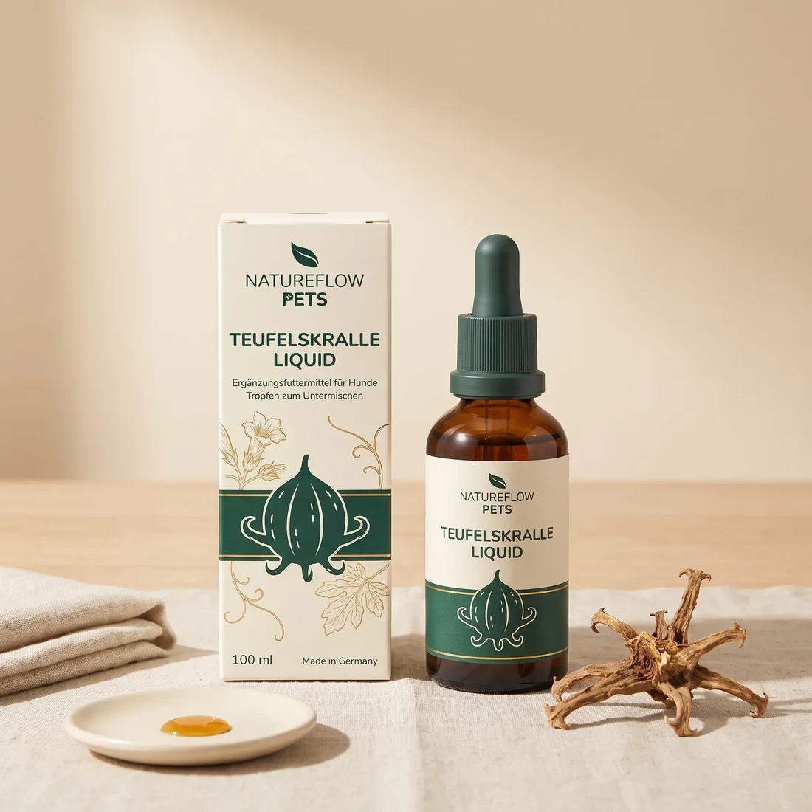

Zum Vergrößern tippenVerpackung, Rohstoff, Zutaten und Material-Detail. Für den Livegang kommen die Rückseite mit der Deklaration und ein Größenvergleich dazu.
Gelenke & Bewegung
Hochkonzentrierter Teufelskrallen-Extrakt in flüssiger Form – tropfengenau dosierbar.
Inkl. MwSt., zzgl. Versand · Lieferzeit 1–3 Werktage
Größe wählen
Einmalige Lieferung · kostenloser Versand ab 40,00 €
| Teufelskrallenextrakt | 400.000 mg/l |
| davon je 2,5 ml (10 kg Hund) | 1.000 mg |
| Milchsäure | 3.200 mg/l |
| Sorbinsäure als Kaliumsorbat | 1.119,45 mg/l |
| Zitronensäure | 800 mg/l |
| Je 10 kg Körpergewicht täglich | ½ Teelöffel (2,5 ml) |
Der Extraktgehalt ist der eigentliche Punkt: 400.000 mg je Liter bedeuten 1.000 mg Extrakt je 10 kg Körpergewicht und Tag. Milch-, Sorbin- und Zitronensäure sind technologische Zusatzstoffe zur Haltbarkeit, keine Wirkstoffe.
Einen halben Teelöffel (2,5 ml) je 10 kg Körpergewicht täglich unter das Futter mischen.
| Gewicht | Pro Tag | 100 ml reichen |
|---|---|---|
| bis 10 kg | 2,5 ml | 40 Tage |
| 11 – 20 kg | 5 ml | 20 Tage |
| 21 – 30 kg | 7,5 ml | 13 Tage |
| 31 – 40 kg | 10 ml | 10 Tage |
| 41 – 50 kg | 12,5 ml | 8 Tage |
Wichtig: Nicht für trächtige Hündinnen geeignet. Bei großen Hunden ist die 100-ml-Flasche nach gut einer Woche leer – ab etwa 20 kg ist die 500-ml-Flasche die vernünftige Wahl, sonst wird es unnötig teuer und geht ständig aus.
Zusammensetzung: Teufelskrallenwurzel, gemahlen; 1,2-Propandiol.
Analytische Bestandteile: 0,0 % Rohprotein · 0,0 % Rohfett · 0,08 % Rohfaser · 0,6 % Rohasche · 94,5 % Feuchte · 0,17 % Natrium.
Zusatzstoffe je Liter: Sensorische Zusatzstoffe: Teufelskrallenextrakt 400.000 mg. Technologische Zusatzstoffe: Milchsäure 3.200 mg; Sorbinsäure als Kaliumsorbat 1.119,45 mg; Zitronensäure 800 mg.
Nicht für trächtige Hündinnen geeignet. Ergänzungsfuttermittel für Hunde. Ersetzt keine tierärztliche Behandlung und keine Diagnose. Ergänzungsfuttermittel dienen nicht als Ersatz für eine ausgewogene Ernährung; die empfohlene Tagesmenge nicht überschreiten. Kühl, trocken und für Kinder unerreichbar lagern.
Versand innerhalb Deutschlands in 1–3 Werktagen, kostenlos ab 40 € Bestellwert. Rückgabe innerhalb von 120 Tagen, auch bei geöffneter Packung.
So läuft es im Alltag
Der Vorteil der flüssigen Form ist die Genauigkeit: Ein 14-kg-Hund bekommt bei einer Tablette entweder zu wenig oder zu viel – flüssig lässt sich die Menge auf den Milliliter genau treffen. Und heraussortieren kann sie im Futter niemand.
Bewertungen
Die Gesamtbewertung stammt aus verifizierten Käufen im Shop.
aus 6.262 Bewertungen
Hinweis für den Entwurf, nicht für den Shop: Die Gesamtbewertung oben stammt aus dem Live-Shop. Einzelne Kundenstimmen zeigen wir bei diesem Produkt bewusst nicht – die verfügbaren Texte folgen erkennbar einem Textbaustein-Muster mit wechselnden Vornamen und wirken maschinell erzeugt. Sie als echte Erfahrungsberichte auszugeben, wäre genau das, was wir uns verboten haben. Vor dem Livegang mit Kai zu klären.
Passt dazu
Teufelskralle ist ein Begleitstoff. Das Fundament legen diese drei.


Häufige Fragen
Ehrlich: nicht besonders. In der Humanmedizin gibt es Untersuchungen zu Bewegungsbeschwerden mit uneinheitlichen, teils positiven Ergebnissen. Belastbare Studien speziell an Hunden sind rar. Wir setzen sie ein, weil sie traditionell verwendet wird und gut verträglich ist – nicht, weil es dafür einen Beweis am Hund gäbe. Unsere vollständige Einordnung steht auf der Wissenschaftsseite.
Weil die Alternative wäre, Ihnen etwas vorzumachen. Ein Hersteller, der zu jedem Stoff dasselbe Ausrufezeichen verkauft, hat entweder die Studien nicht gelesen oder darauf gesetzt, dass Sie es nicht tun.
Für kleine Hunde, für Zwischengewichte, bei denen eine halbe Tablette zu ungenau ist, und für Hunde, die Tabletten zuverlässig aus dem Napf sortieren.
Das ist eine Vorsichtsmaßnahme aus der Deklaration des Herstellers, die wir unverändert weitergeben. Bei trächtigen oder säugenden Hündinnen bitte grundsätzlich vorher mit der Tierärztin sprechen – das gilt auch für unsere anderen Produkte.